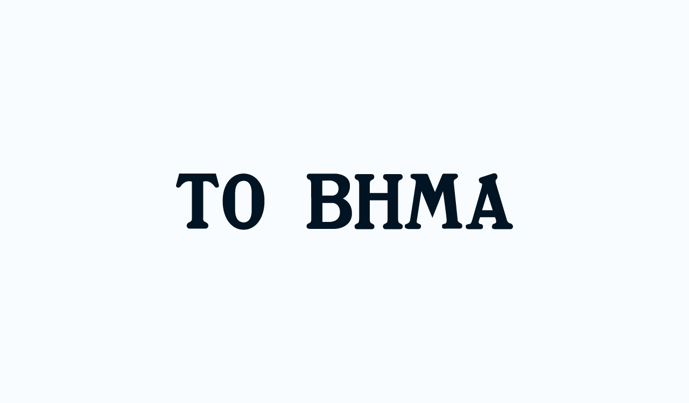

Ειδήσεις στο "Το Βήμα"
Τα πιο εξεζητημένα θέματα της επικαιρότητας.

Σε κάθε ειδησεογραφική ιστοσελίδα, κυριαρχεί η κατηγορία των νεότερων ειδήσεων, η επικαιρότητα. Καθημερινά οι άνθρωποι ενημερώνονται για τα νέα της ημέρας μέσω της συγκεκριμένης στήλης η οποία ανανεώνεται διαρκώς ανάλογα τα γεγονότα που διαδραματίζονται.
Οι τελευταίες ειδήσεις του κόσμου επηρεάζουν την καθημερινότητα και την διάθεση των πολιτών.
Στην περίπτωση της Ελλάδας, αναλύσαμε ένα από τα πιο γνωστά ενημερωτικά σάιτ, Το Βήμα. Με βάση τα δεδομένα του, το πιο συχνό θέμα ειδήσεων είναι ο πόλεμος που έχει ξεσπάσει σε πολλά σημεία του πλανήτη, κυρίως όμως ο πόλεμος μεταξύ Ιράν-Ιράκ και το κλείσιμο των Στενών του Ορμούζ που έχει επηρεάσει σχεδόν την παγκόσμια οικονομία.
Background
Πιο συγκεκριμένα, αναλύσαμε τα στοιχεία μέσω της γλώσσας python, στην BeautifulSoup βιβλιοθήκη.
Πατήστε εδώ για να μεταβείτε στα δεδομένα.